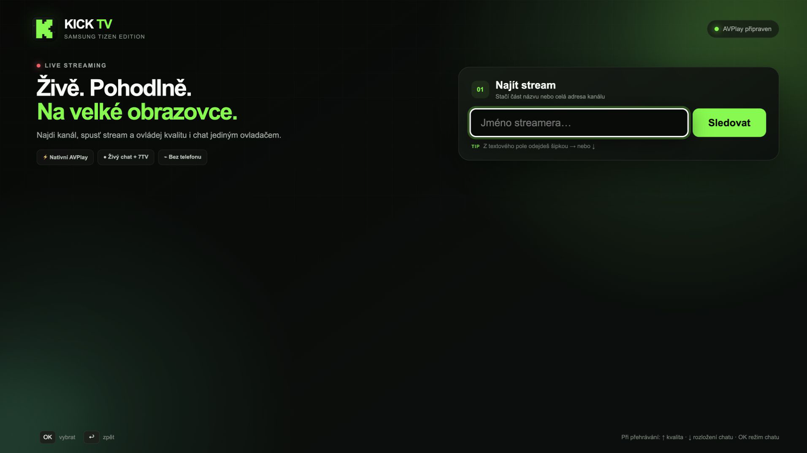
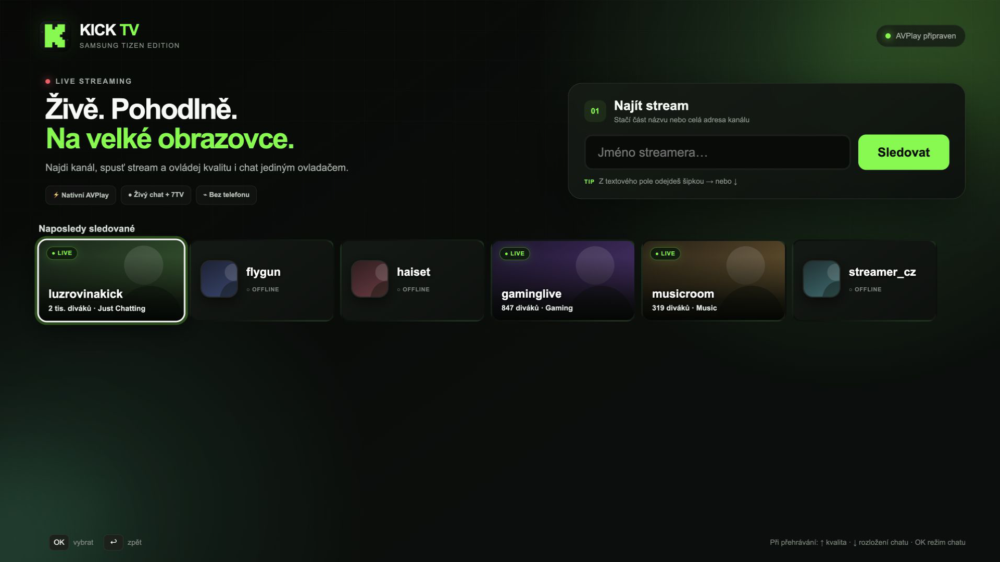
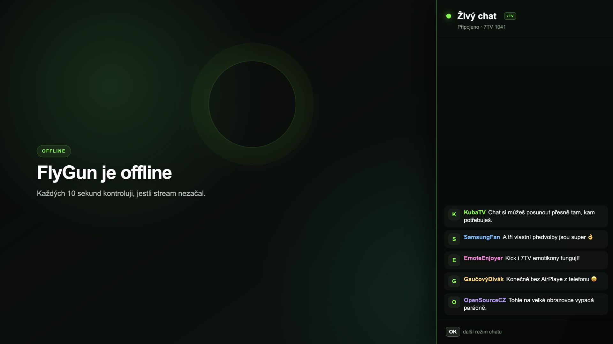
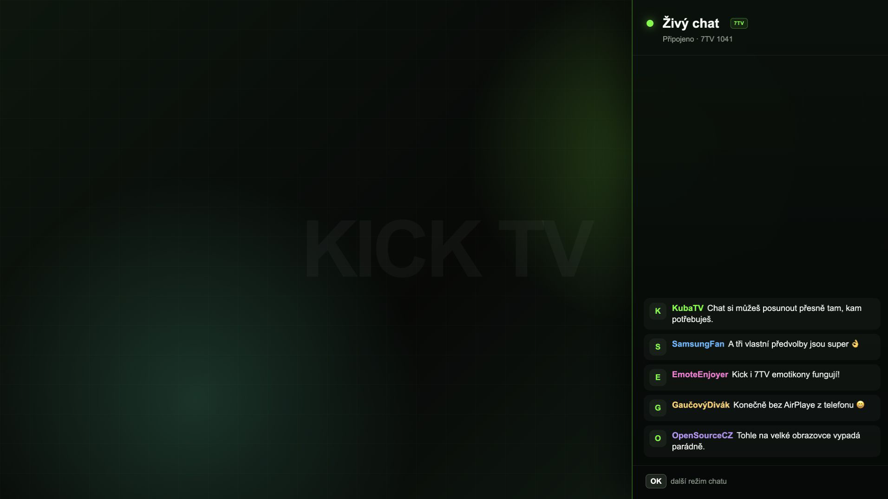
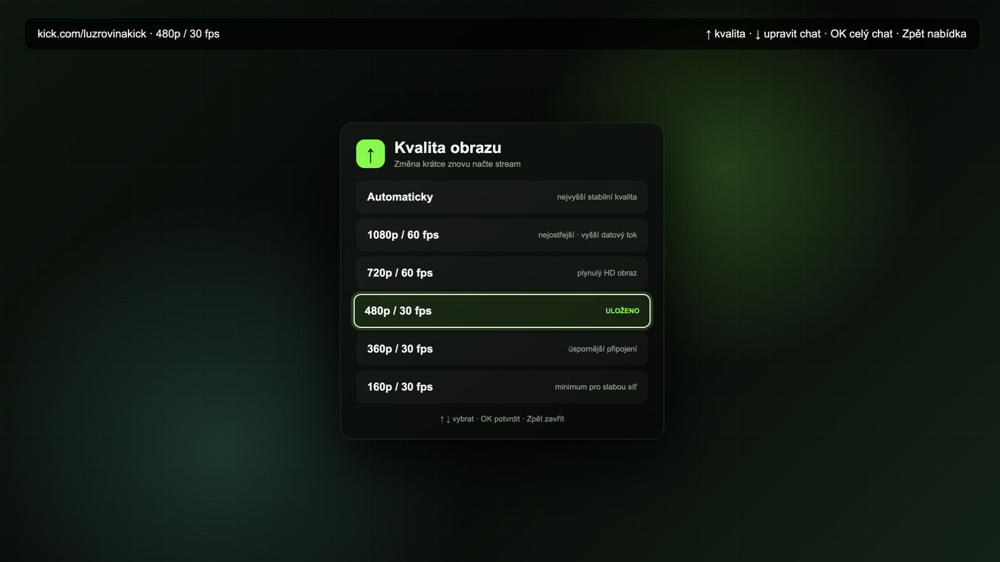
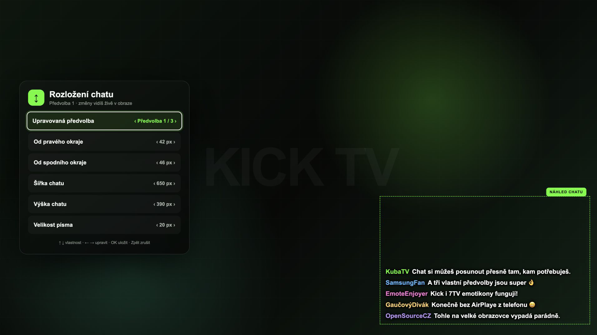

Samsung AVPlay se stará o plynulé video a dovolí ti vybrat kvalitu obrazu.
Zdarma a open source
Kick pohodlně na Samsung TV.
Udělal jsem aplikaci pro lidi, kteří chtějí sledovat Kick z gauče na velké obrazovce — bez AirPlaye, telefonu nebo notebooku. Včetně chatu, 7TV emotikonů a ovládání běžným ovladačem.

Všechno důležité přímo v televizi
Najdi streamera, spusť stream a dál už telefon nepotřebuješ.
Stačí část jména. Offline kanál ukáže jméno i chat a sám každých 10 sekund kontroluje, jestli stream nezačal.
Živý chat zobrazuje běžné i animované Kick emotikony a globální i kanálové 7TV emotes.
Celý panel nebo tři vlastní předvolby přímo v obraze. Pozici i velikost nastavíš ovladačem.
Nabídky, přehrávání i návrat zpět se chovají tak, jak člověk u televizní aplikace čeká.
Česká televize dostane české rozhraní, všechny ostatní jazyky automaticky anglické.
Jak aplikace vypadá
Rozhraní je navržené pro velkou obrazovku a ovládání ze sedačky.





Chceš to zkusit na své TV?
Kick TV je teď přímo v komunitním katalogu Apps2Samsung. Stačí v nabídce vybrat KickTV, označit svoji televizi a kliknout na Download & Install — žádné ruční stahování WGT.
English: Kick TV is a free, unofficial Kick streaming app for Samsung Smart TVs running Tizen. It includes native AVPlay video, channel search, quality selection, LIVE/OFFLINE history, live chat, animated Kick and 7TV emotes, and configurable in-picture chat layouts. Installation is available directly from the Apps2Samsung community catalog. Read the English README →